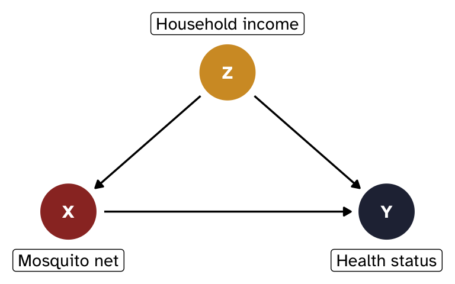
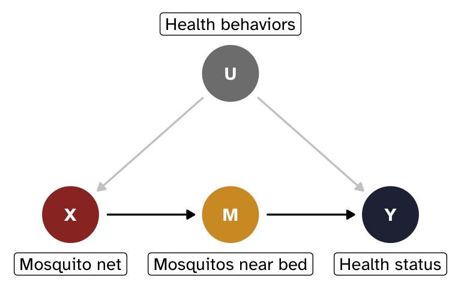

library(tidyverse)
library(parameters)
library(marginaleffects)
n <- 1000
withr::with_seed(114941, {
net_data <- tibble(
z = rbinom(n, 1, 0.5),
x = rbinom(n, 1, plogis(-1 + 2 * z)),
y = 50 + 10 * x + 15 * z + rnorm(n, 0, 5)
) |>
select(x, y, z)
})How to adjust
How to adjust
In general “conditioning on” a variable means somehow considering it in the estimate of the relationship between X and Y.
Conditioning can be explicit, like including a variable in a model. This is often called “adjusting.”
Conditioning can also be implicit, like collecting data only about one part of the population, which sneakily builds it into the data and can create collider bias.
Backdoor adjustment
Backdoor adjusting involves removing the effect of confounders to estimate the average causal effect of a treatment X on an outcome Y.
There are lots of different methods to adjust for variables. Instead of working with abstract Xs, Ys, and Zs, we’ll make things more concrete with a more realistic example of the effect of mosquito nets on household health status:1
- X = mosquito net use (binary: 0 = no net, 1 = uses net)
- Y = health status (continuous score, roughly 0–100)
- Z = household income (binary: 0 = low, 1 = high)
Income confounds the relationship between nets and health: wealthier households are more likely to use nets and tend to be healthier for other reasons.
Show code for tikz-based DAG
\begin{tikzpicture}[>={stealth}]
\node (x) at (0,0) {X};
\node (y) at (2,0) {Y};
\node (z) at (1,1) {Z};
\path[->] (z) edge (x);
\path[->] (z) edge (y);
\path[->] (x) edge (y);
\end{tikzpicture}Show code for {ggdag}-based DAG
library(ggdag)
mosquito_dag <- dagify(
Y ~ X + Z,
X ~ Z,
exposure = "X",
outcome = "Y",
coords = list(x = c(X = 1, Y = 3, Z = 2), y = c(X = 1, Y = 1, Z = 2)),
labels = c(X = "Mosquito net", Y = "Health status", Z = "Household income")
)
mosquito_dag_plot <- mosquito_dag |>
tidy_dagitty() |>
node_status()
ggplot(mosquito_dag_plot, aes(x = x, y = y, xend = xend, yend = yend)) +
geom_dag_edges() +
geom_dag_point(aes(color = status)) +
geom_dag_text(family = "Atkinson Hyperlegible") +
geom_dag_label(
data = filter(mosquito_dag_plot, !is.na(status)),
aes(label = label),
nudge_y = -0.35,
family = "Atkinson Hyperlegible"
) +
geom_dag_label(
data = filter(mosquito_dag_plot, is.na(status)),
aes(label = label),
nudge_y = 0.35,
family = "Atkinson Hyperlegible"
) +
scale_color_manual(
values = c("#9b332b", "#262d42"),
na.value = "#d39a2d",
guide = "none"
) +
scale_x_continuous(limits = c(0.7, 3.3)) +
theme_void()

Simulated data and naive estimate
To illustrate all these different adjustment techniques, we’ll simulate some data where the true causal effect of net use on health is 10 points.
People have a 50% chance of having high or low income. Net use depends on income, and wealthier households are more likely to use nets. Health depends on both net use and income, plus some random noise.
If we just look at the relationship of X on Y without adjusting for anything, we will not get the correct effect for X because of confounding. The coefficient on x here is bigger than the true effect of 10 because it conflates the causal effect of nets with the income advantage that net users tend to have.
model_naive <- lm(y ~ x, data = net_data)
model_parameters(model_naive, verbose = FALSE)Parameter | Coefficient | SE | 95% CI | t(998) | p
-------------------------------------------------------------------
(Intercept) | 53.77 | 0.36 | [53.07, 54.47] | 151.29 | < .001
x | 17.32 | 0.51 | [16.32, 18.32] | 34.05 | < .001How do we isolate what we’re looking for?
The main estimand we care about here is the causal effect of mosquito nets on health status, or what would happen if we intervened on X and set X = x (or gave people nets).
Using do-calculus notation, we’ll work with this interventional distribution:
\begin{aligned} &P(y \mid \operatorname{do}(x)), \text{ or} \\[6pt] &P(\text{Health} \mid \operatorname{do}(\text{Net})) \end{aligned}
The specific quantity we’ll estimate is a comparison or contrast within this distribution—we want to know the difference in the average value of Y when we intervene and when we don’t intervene with nets, or:
\begin{aligned} &E[Y \mid \operatorname{do}(x = 1)] - E[Y \mid \operatorname{do}(x = 0)], \text{ or} \\[6pt] &E[\text{Health} \mid \operatorname{do}(\text{net} = 1)] - E[\text{Health} \mid \operatorname{do}(\text{net} = 0)] \end{aligned}
The backdoor adjustment formula tells us what we need to do to estimate P(y \mid \operatorname{do}(x)):
P(y \mid \operatorname{do}(x)) = \sum_z P(y \mid x, z) \times P(z)
In words, this means we need to estimate the distribution of Y given X and Z (P(y \mid x, z)) weighted by the marginal probability of each level of Z (P(z)).
How to actually close backdoors
There are many ways to implement backdoor adjustment, like these common approaches:
- Stratification
- Regression adjustment
- Matching
- Inverse probability weighting
- G-computation
I’ll show a short example of each of these below, and I’ll include some extra resources and information about them in each section. There are are different variations and flavors of these different approaches, and there are methods I don’t include here2—this is definitely not comprehensive!
Stratification
The most direct translation of the backdoor formula is to hold Z constant by stratifying, or finding the effect of net use within each income group and calculating the weighted average across groups.
We can do this with group_by() and summarize() from {dplyr}:
group_effects <- net_data |>
group_by(z) |>
summarize(
effect = mean(y[x == 1]) - mean(y[x == 0]),
n = n()
)
group_effects# A tibble: 2 × 3
z effect n
<int> <dbl> <int>
1 0 10.1 506
2 1 10.3 494weighted.mean(group_effects$effect, group_effects$n)[1] 10.18125Stratification is neat and easy, but only works with discrete confounders that have few levels. If you have a continuous confounder (e.g., actual monthly income instead of a binary yes/no), or a confounder with lots of levels (e.g., country or state), or multiple confounders (e.g. both income and country), you’d have too many groups and too few observations per group.
Regression adjustment
An alternative to direct stratified weighted averages is to use regression (which is fundamentally just fancy averaging). We can include the confounder as a covariate:
# Control for z
model_controlled <- lm(y ~ x + z, data = net_data)
model_parameters(model_controlled, verbose = FALSE)Parameter | Coefficient | SE | 95% CI | t(997) | p
-------------------------------------------------------------------
(Intercept) | 50.03 | 0.23 | [49.57, 50.49] | 213.78 | < .001
x | 10.18 | 0.35 | [ 9.49, 10.88] | 28.78 | < .001
z | 14.63 | 0.35 | [13.94, 15.33] | 41.36 | < .001The coefficient for x is the effect of net use on health, holding income constant. You can include any number of confounders and they can be binary, categorical, or continuous.
Regression adjustment works well when the functional form is correct. In this case, we simulated the data using linear relationships without any interactions or non-linear terms, so the causal effect is correct. But in real life, you’re betting that the functional form of the model captures the true relationship between confounders and outcome.
Matching
NoteExtra resources
TODO
Another approach is to modify the sample before fitting an outcome model so that we can compare treated and untreated units without confounding.
We can match each treated unit with a comparable control unit based on their values of the confounder (e.g. create a new sample where net users and non-users are paired within each income group).
{MatchIt} makes this straightforward, and it provides a ton of different matching methods and estimands. Here we’ll use exact matching:
library(MatchIt)
# Find matched pairs of x based on values of z
m <- matchit(x ~ z, data = net_data, method = "exact", estimand = "ATE")
# Extract the matches as a data frame
matched_data <- match_data(m)
# Estimate y ~ x with the matched data (and use the matched weights)
model_matched <- lm(y ~ x, data = matched_data, weights = weights)
model_parameters(model_matched, verbose = FALSE)Parameter | Coefficient | SE | 95% CI | t(998) | p
-------------------------------------------------------------------
(Intercept) | 57.24 | 0.39 | [56.47, 58.00] | 147.11 | < .001
x | 10.18 | 0.56 | [ 9.09, 11.27] | 18.28 | < .001The coefficient for x is the effect of net use on health. Because we estimated this on matched data that has comparable values of the confounder, we’ve adjusted for Z.
Inverse probability weighting (IPW)
NoteExtra resources
TODO
Matching is neat, but it typically involves discarding unmatched units. An alternative approach is to reweight observations to create balanced groups of treated and untreated units.
The most common way to do this is to create inverse probability weights, where all treated people get a weight of \frac{1}{p_i} and all untreated people get a weight of \frac{1}{1 - p_i} (where p_i refers to each person’s propensity scores). This creates a “pseudo-population” where treatment is independent of the confounders, mimicking what randomization would have achieved.
Practically speaking, this gives more weight to more unusual and unexpected observations. For instance, someone with a high predicted probability (90%) of choosing to use a net who then uses a net isn’t really notable and will have a low weight (\frac{1}{0.9}, or 1.111). Someone else with a high probability (90% again) of choosing a net who doesn’t use a net will have a high weight (\frac{1}{1 - 0.9}, or 10). This makes it so that the should-have-probably-used-a-net person is more comparable to the corresponding treated people.
We adjust for confounding with inverse probability weights with this process:
Create a treatment model: Use the confounders to calculate propensity scores—or the probability of being treated—for each observation, typically using logistic regression (if the treatment is binary) or some other regression model (if the treatment is continuous)
Calculate inverse probability weights: Use the propensity scores and observed treatment status to create weights. There are lots of ways to do this! A common formula for binary treatments looks like this:
\frac{\text{Treatment}}{\text{Propensity}} + \frac{1 - \text{Treatment}}{1 - \text{Propensity}}
The {WeightIt} package provides many other weighting methods for binary and continuous treatments.
Use the weights in an outcome model: Use the inverse probability weights to reweight all the observations in your sample when running your regression model. A common way to do this is with the
weightsargument inlm().
# Treatment model with logistic regression
# Estimate probability of x based on values of z
model_ipw_treatment <- glm(
x ~ z,
family = binomial(link = "logit"),
data = net_data
)
# Propensity scores and weights
data_ipw <- net_data |>
mutate(
prob = predict(model_ipw_treatment, type = "response"),
ipw = (x / prob) + ((1 - x) / (1 - prob))
)
# Outcome model
# Estimate y ~ x with the newly weighted pseudo-population
model_ipw_outcome <- lm(y ~ x, data = data_ipw, weights = ipw)
model_parameters(model_ipw_outcome, verbose = FALSE)Parameter | Coefficient | SE | 95% CI | t(998) | p
-------------------------------------------------------------------
(Intercept) | 57.24 | 0.39 | [56.47, 58.01] | 145.37 | < .001
x | 10.18 | 0.56 | [ 9.09, 11.27] | 18.28 | < .001Technically the coefficient is correct, but the standard errors do not account for the fact that the weights were estimated, so they will be incorrect.
One way around this is to calculate bootstrapped standard errors; see Chapter 2 and Chapter 11 in Causal Inference in R [@todo] for more details and complete examples.
library(WeightIt)
# Treatment model with logistic regression
# Estimate probability of x based on values of z
W <- weightit(x ~ z, data = net_data, method = "glm", estimand = "ATE")
# Outcome model
# Estimate y ~ x with the newly weighted pseudo-population
model_ipw_weightit <- lm_weightit(y ~ x, data = net_data, weightit = W)
model_parameters(model_ipw_weightit, verbose = FALSE)Parameter | Coefficient | SE | 95% CI | t(998) | p
-------------------------------------------------------------------
(Intercept) | 57.24 | 0.34 | [56.57, 57.91] | 167.81 | < .001
x | 10.18 | 0.35 | [ 9.49, 10.88] | 28.76 | < .001
NoteUse {WeightIt} weights manually
You don’t have to use lm_weightit() for the outcome model. You can extract the actual weights from W and use them in regular lm(), but then you’re responsible for making sure the standard errors are correctly adjusted, which is tricky. By default, lm_weightit() internally uses something called “M-estimation” to account for the fact that the weights themselves are uncertain. If we use something like vcov = "HC0" in model_parameters(), we’ll get robust standard errors without incorporating the uncertainty in the weights, and they’ll be different:
# Add propensity scores and weights to data
data_ipw_weightit <- net_data |>
mutate(
prob = W$ps,
ipw = W$weights
)
# Outcome model
# Estimate y ~ x with the newly weighted pseudo-population
model_ipw_weightit_manual <- lm(y ~ x, data = data_ipw_weightit, weights = ipw)
model_parameters(
model_ipw_weightit_manual,
vcov = "HC0",
verbose = FALSE
)Parameter | Coefficient | SE | 95% CI | t(998) | p
-------------------------------------------------------------------
(Intercept) | 57.24 | 0.45 | [56.36, 58.11] | 128.25 | < .001
x | 10.18 | 0.64 | [ 8.93, 11.43] | 15.97 | < .001One way around this is to calculate bootstrapped standard errors; see Chapter 11 in Causal Inference in R [@todo] for more details. You can also calculate bootstrapped standard errors with lm_weightit() if you want with lm_weightit(..., vcov = "BS").
The coefficient for x is the effect of net use on health. Because we estimated this on a reweighted pseudo-population, we’ve adjusted for Z.
G-computation
NoteExtra resources
TODO
Matching and inverse probability weighting both let us manipulate the sample to get balanced populations—exactly balanced in the case of matching, reweighted pseudo-populations in the case of IPW. With these approaches, we model the process of being assigned to treatment.
A neat alternative to weighting and sample manipulation is to use something called the parametric G-formula or G-computation. It’s surprisingly straightforward:
- Fit a model that estimates the outcome, controlling for confounders
- Use the model to generate a set of predictions where we pretend that every row was treated (i.e. set
x = 1) - Use the model to generate a set of predictions where we pretend that every row was not treated (i.e. set
x = 0) - Calculate the difference in the two sets of predictions, then find the average of that. This is the causal effect.
This approach feels more like the causal estimand that we originally defined:
\begin{aligned} &E[Y \mid \operatorname{do}(x = 1)] - E[Y \mid \operatorname{do}(x = 0)], \text{ or} \\[6pt] &E[\text{Health} \mid \operatorname{do}(\text{net} = 1)] - E[\text{Health} \mid \operatorname{do}(\text{net} = 0)] \end{aligned}
In this case, we use code to set everyone’s treatment to \operatorname{do}(\text{net} = 1), then set everyone to \operatorname{do}(\text{net} = 0), and then find the average difference in outcomes.
With G-computation, we can technically use whatever kind of outcome model we want. We can use a simple model like lm(y ~ x + z), or we can include interactions and splines or use even more flexible machine learning models to reduce the risk of misspecification.
This manual approach works well, but doesn’t include standard errors or other details. You can calculate standard errors by bootstrapping—see Chapter 13 in Causal Inference in R [@todo]—or you use something like {marginaleffects}.
# Fit outcome model with confounders
model_gcomp <- lm(y ~ x + z, data = net_data)
# Predict outcomes when everyone is treated and everyone is untreated
y1 <- predict(model_gcomp, newdata = mutate(net_data, x = 1))
y0 <- predict(model_gcomp, newdata = mutate(net_data, x = 0))
# Find difference in means, or average treatment effect (ATE)
mean(y1) - mean(y0)[1] 10.18308{marginaleffects} can do all the work of setting everyone’s treatment to 0, to 1, and finding the difference automatically. It can also provide robust and/or clustered standard errors.
model_gcomp <- lm(y ~ x + z, data = net_data)
avg_comparisons(model_gcomp, variables = list(x = 0:1))
Estimate Std. Error z Pr(>|z|) S 2.5 % 97.5 %
10.2 0.354 28.8 <0.001 602.5 9.49 10.9
Term: x
Type: response
Comparison: 1 - 0We technically don’t have to use an unweighted outcome model. We can use IPW like normal and then use it for g-computation. The authors of {WeightIt} recommend using weighted g-computation whenever possible to benefit from the idea of pseudo-populations and the flexibility of calculating contrasts.
# Treatment model with logistic regression
# Estimate probability of x based on values of z
W_gcomp <- weightit(x ~ z, data = net_data, method = "glm", estimand = "ATE")
# Outcome model
# Estimate y ~ x with the newly weighted pseudo-population
# Including x * z allows the effect of x to vary across levels of z
model_weighted <- lm_weightit(y ~ x * z, data = net_data, weightit = W_gcomp)
# G-computation on the weighted model
avg_comparisons(model_weighted, variables = list(x = 0:1))
Estimate Std. Error z Pr(>|z|) S 2.5 % 97.5 %
10.2 0.354 28.8 <0.001 601.8 9.49 10.9
Term: x
Type: probs
Comparison: 1 - 0Front-door adjustment
NoteExtra resources
TODO
All the methods above require observing the confounder Z. But what if there are unobservable confounders that we can’t measure?!
Let’s change the example a little bit. We’ll get rid of Z and add two new nodes:
- X = mosquito net use (binary: 0 = no net, 1 = uses net)
- Y = health status (continuous score, roughly 0–100)
- M = average number of mosquitos near the bed at night (continuous)
- U = unobserved general health behaviors
Mosquitos (M) are the mechanism for how mosquito nets affect health status. When nets are used, the number of mosquitos present in the immediate vicinity of a person should drop significantly. In theory, that count of mosquitos should be completely uninfluenced by anything else and only influenced by mosquito net use. In practice, this probably isn’t the case! Actual front-door mediators are really hard to find in real life. But just go with it.
General health behaviors (U) confound the relationship between nets and health, but we can’t measure them; health-conscious people are more likely to use nets and tend to be healthier through other channels.
Show code for tikz-based DAG
\definecolor{ucolor}{HTML}{888888}
\begin{tikzpicture}[>={stealth}]
\node (x) at (0,0) {X};
\node (m) at (2,0) {M};
\node (y) at (4,0) {Y};
\node[ucolor] (u) at (2,1.5) {U};
\path[->] (x) edge (m);
\path[->] (m) edge (y);
\path[->, dashed, ucolor] (u) edge (x);
\path[->, dashed, ucolor] (u) edge (y);
\end{tikzpicture}Show code for {ggdag}-based DAG
mosquito_dag_frontdoor <- dagify(
Y ~ M + U,
X ~ U,
M ~ X,
exposure = "X",
outcome = "Y",
latent = "U",
coords = list(
x = c(X = 1, Y = 3, M = 2, U = 2),
y = c(X = 1, Y = 1, M = 1, U = 2)
),
labels = c(
X = "Mosquito net",
Y = "Health status",
M = "Mosquitos near bed",
U = "Health behaviors"
)
)
mosquito_dag_frontdoor_plot <- mosquito_dag_frontdoor |>
tidy_dagitty() |>
node_status()
ggplot(
mosquito_dag_frontdoor_plot,
aes(x = x, y = y, xend = xend, yend = yend)
) +
geom_dag_edges() +
geom_dag_point(aes(color = status)) +
geom_dag_text(family = "Atkinson Hyperlegible") +
geom_dag_label(
data = filter(
mosquito_dag_frontdoor_plot,
status != "latent" | is.na(status)
),
aes(label = label),
nudge_y = -0.35,
family = "Atkinson Hyperlegible"
) +
geom_dag_label(
data = filter(mosquito_dag_frontdoor_plot, status == "latent"),
aes(label = label),
nudge_y = 0.35,
family = "Atkinson Hyperlegible"
) +
scale_color_manual(
values = c("#9b332b", "grey50", "#262d42"),
na.value = "#d39a2d",
guide = "none"
) +
scale_x_continuous(limits = c(0.7, 3.3)) +
theme_void()

Simulated data and naive estimate
As before, we’ll simulate some data for this new DAG:
n <- 1000
withr::with_seed(915623, {
net_data_fd <- tibble(
u = rnorm(n),
x = rbinom(n, 1, plogis(-0.5 + 1.5 * u)),
m = 10 - 5 * x + rnorm(n, 0, 2),
y = 70 - 2 * m + 4 * u + rnorm(n, 0, 3)
) |>
# Throw away u so we can't use it
select(x, y, m)
})If we just look at the relationship of X on Y without adjusting for U, we will not get the correct effect for X because of confounding. The coefficient on x here is bigger than the true effect of 10 because it conflates the causal effect of nets with health behaviors.
model_naive_fd <- lm(y ~ x, data = net_data_fd)
model_parameters(model_naive_fd, verbose = FALSE)Parameter | Coefficient | SE | 95% CI | t(998) | p
-------------------------------------------------------------------
(Intercept) | 48.04 | 0.25 | [47.56, 48.53] | 194.11 | < .001
x | 14.00 | 0.40 | [13.22, 14.79] | 35.01 | < .001How do we isolate what we’re looking for?
Even though we used a column named u in the simulated dataset, we got rid of it. We have no observable confounders, which means that we can’t use backdoor adjustment.
We can, however, use front-door adjustment! The front-door adjustment formula tells us what we need to do to estimate P(y \mid \operatorname{do}(x)):
P(y \mid \operatorname{do}(x)) = \sum_m P(m \mid x) \sum_{x'} P(y \mid x', m) \times P(x')
- P(m \mid x): Estimate how X affects M. This is unconfounded because U doesn’t directly affect M.
- \sum_{x'} P(y \mid x', m) \times P(x'): Estimate how M affects Y, adjusting for X to block the backdoor path through U.
By chaining these two unconfounded estimates together, we can find the full causal effect of X on Y despite never observing U.
How to actually do front-door adjustment
Effect of X on M
First we need to find P(m \mid x), or the effect of X on M. There’s no confounding on this path—U doesn’t control mosquito access to the bed—so we can use a simple regression model:
model_fd_xm <- lm(m ~ x, data = net_data_fd)
model_parameters(model_fd_xm, verbose = FALSE)Parameter | Coefficient | SE | 95% CI | t(998) | p
-------------------------------------------------------------------
(Intercept) | 10.00 | 0.08 | [ 9.85, 10.16] | 123.14 | < .001
x | -5.07 | 0.13 | [-5.32, -4.81] | -38.58 | < .001# Extract the coefficient for x:
coef_xm <- model_fd_xm |>
model_parameters(keep = "x", verbose = FALSE) |>
pull(Coefficient)
coef_xm[1] -5.065073It looks like using a mosquito net reduces the number of mosquitos near the bed by −5.1 on average. Nets work!
Effect of M on Y, adjusting for X
Next we need to find \sum_{x'} P(y \mid x', m) \times P(x'), or the effect of M on Y, adjusting for X.
The path M \leftarrow X \leftarrow U \rightarrow Y is a backdoor from M to Y, but we can block it by adjusting for X. We’ll just use regression adjustment here (but we could theoretically use any other method, like IPW, matching, G-computation, etc.)
model_fd_my <- lm(y ~ m + x, data = net_data_fd)
model_parameters(model_fd_my, verbose = FALSE)Parameter | Coefficient | SE | 95% CI | t(997) | p
-------------------------------------------------------------------
(Intercept) | 68.02 | 0.75 | [66.54, 69.50] | 90.38 | < .001
m | -2.00 | 0.07 | [-2.14, -1.85] | -27.40 | < .001
x | 3.89 | 0.48 | [ 2.95, 4.82] | 8.15 | < .001# Extract the coefficient for m:
coef_my <- model_fd_my |>
model_parameters(keep = "m", verbose = FALSE) |>
pull(Coefficient)
coef_my[1] -1.996825From this, it looks like increasing the number of mosquitos near the bed by one causes a −2.0 point decrease in health status, on average. Mosquitos are bad!
Combined effect
To find the total causal effect of X on Y, we multiply the two effects together:
coef_xm * coef_my[1] 10.11407Perfect! The effect of nets on health status is the same as what we built into the data, but we estimated it without touching U. This works because M fully transmits the causal effect of X and there is no unobserved confounding of the M \rightarrow Y relationship except through X, letting us decompose the problem into two identifiable pieces.
This multiplication works because the relationships are linear. In more complex situations like non-linear models or models with interaction terms, we would need to apply the full front‑door formula by averaging predictions, similar to G‑computation.
Hic sunt dracones
Situations like this are exceptionally rare in practice:
- The mediator must be completely unaffected by the unobserved confounder U (i.e., no arrow from U \rightarrow M). This is an incredibly strong assumption. In this situation, it means that there cannot be any way that an unobserved confounder could possibly influence the number of mosquitos in the immediate vicinity of someone’s bed—the only possible reason for mosquitos near the bed is the presence or absence of a net. That’s… implausible.
- The mediator must also fully mediate the effect of X on Y; there can be no direct path from X \rightarrow Y. Here that means that mosquito nets can only influence health status because they reduce the number of mosquitos near you while sleeping at night. This is a little more plausible—most people tend to only use nets at night while they sleep.
If these assumptions hold, front‑door adjustment is a powerful tool; if not, the estimate will be biased.
Footnotes
I created this example on a whim back in 2019 when I taught my first causal inference class, and it’s proven really useful. I use it all my causal inference classes, in several blog posts, and it’s even used as an example throughout Chapter 2 of Causal Inference in R [@todo].↩︎
Like marginal structural models and structural nested mean models [@todo1] or doubly robust augmented inverse probability weighting [@todo2]. You can get really fancy with these techniques.↩︎